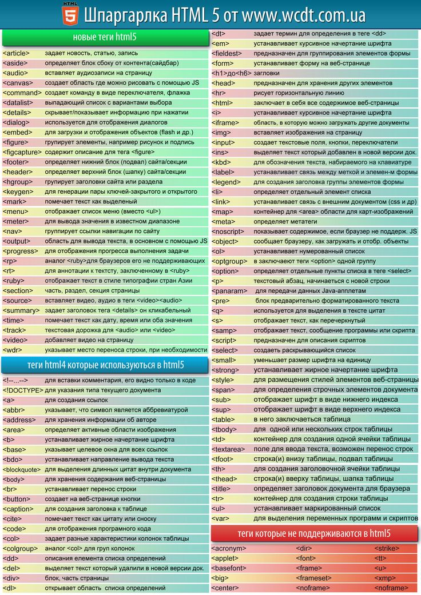

123789
Здесь вы узнаете больше о разметке и гипертексте.
<br>Перенос строки
<hr>горизонтальная линия-разделитель
Маркированный список - ul(unordered),
нумерованный список - ol(ordered list)

| Имя | Возраст | Суперспособность |
|---|---|---|
| Логан | 186 | Повышенная способность к регенерации |
| Профессор икс | 94 | Чтение мыслей, вызов иллюзий, временного паралича, способность останавливать время |
| Первая ячейка | Вторая ячейка | Третья ячейка |
| Единственная ячейка | ||
p {
color: red;
text-decoration: underline;
}
Карточка.card { /* стили для всех элементов с class="card" */ background: #333; /* фон серого цвета */ } #button-go-to-top { /* стили для элемента с id="button-go-to-top" */ text-decoration: underline; /* подчёркивание текста */ } * { margin: 0; } /* абсолютно всем элементам будет установлен margin: 0 */
.page p {/*вложенность на всех уровнях*/
text-decoration: underline;
}
.page > p {/*вложенность на первом уровне*/
text-decoration: underline;
}
img + p {/*который находится сразу после другого элемента*/
margin-top: 0;
font-style: italic;
}
img ~ p {/*который находится после другого элемента*/
margin-top: 0;
font-style: italic;
}
p {/*fonts and fallback fonts*/
font-family: 'Roboto', 'Helvetica Nue', sans-serif;
}
.example {
/* цвет фона «продающий красный», задан в HEX-формате */
background: #e64c0c;
}
.example {
/* картинка на фоне */
background: url('images/nude-president.png');
/* background-size отвечает за размер картинки, cover - картинка растягивается на весь блок, сохраняя пропорции */
background-size: cover;
}
Colors #3ae6сa rbg(255, 123, 13) rgba(144, 32, 16, 0.5) hsl(120, 100%, 50%)
display: none; - элемент перестаёт отображаться на странице.
display: block; - блочный элемент. Ему можно задать ширину, высоту, границы, отступы.
display: inline; - строчный элемент. Задание ширины и высоты не влияет на inline элементы. Задание границ и отступов будет изменять положение окружающего текста, но не будет влиять на положение окружающих блочных элементов.
display: inline-block; - что-то среднее между блочным и строчным элементом. Ему можно задать ширину, высоту, границы и отступы, но он не будет создавать перенос строки до и после себя, в отличие от блочных элементов. С помощью этого типа можно распологать блоки горизонтально в ряд.
Блокам можно задать:
ширину (width) и высоту (height)
отступы: внутренние (padding) и внешние (margin)
границы (border)
overflow: visible; - отображается все содержание блока, даже за пределами установленной высоты и ширины.
overflow: hidden; - отображается только область внутри блока, остальное будет скрыто.
overflow: scroll; - всегда добавляются полосы прокрутки, даже если контент помещается.
overflow: auto; - полосы прокрутки добавляются только при необходимости.
Свойство float может иметь следующие значения:
left - выравнивание по левой стороне, обтекание справа,
right - выравнивание по правой стороне, обтекание слева,
none - выравнивание не задаётся (нужно, чтобы сбросить ранее заданное значение).
.blocks {
display: flex;
justify-content: space-between;
}
.block {
width: 100px;
height: 100px;
background: blue;
border: 1px solid white;
}
Flex-cheatsheet
button {
padding: 12px 24px;
border: none;
border-radius: 4px;
font-size: 14px;
color: #fff;
background: #2799d6;
box-shadow: 0 4px 8px 0 rgba(39, 153, 214, 0.35);
cursor: pointer;
}
button:hover {
background: #7cc1e6;
box-shadow: 0 4px 16px 0 rgba(39, 153, 214, 0.25);
}
button:active {
background: red;
box-shadow: none;
}
:hover - появляется при наведении мышки
:active - появляется при нажатии на элемент
:focus - появляется при фокусировке на элементе (например, когда выбрано поле ввода текста)
button {
border-radius: 4px;
transition: border-radius 0.5s ease-in;
}
button:hover {
border-radius: 16px;
}
button:active {
border-radius: 25px;
}